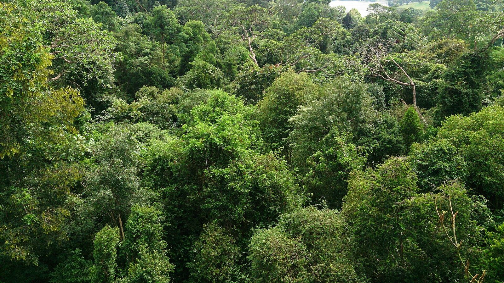

Singapore lost over a third of its species. The big ones were hit hardest.
In 1819, forest covered almost all of Singapore. Today less than 1% of that original forest is left. Scientists checked 200 years of records and estimate that 37% of the species are gone. This page lets you read that loss in the data and start designing a way to slow it.

An island with a long memory. Naturalists have collected plants and animals in Singapore since the 1800s. A team at the National University of Singapore gathered more than 50,000 of those records, covering over 3,000 species. They used the records to work out which species are gone, and when they disappeared.
A species that dies out in one place but survives somewhere else has gone through local extinction. Tigers still live in other countries, but the last tiger in Singapore was shot in the 1930s. Every loss in this lesson is a local extinction.
The variety of living things in a place is its biodiversity. When species disappear, biodiversity falls. Your job in this unit is to explain that loss with numbers, then design a way to slow it.
What Singapore lost
Table 1 shows the share of species that scientists estimate has gone extinct in Singapore over about 200 years. Each number is an estimate, so it comes with a range.
| Group | Estimated share extinct (%) |
|---|---|
| All nine groups together | 37 (range 31 to 42) |
| Butterflies | 48 |
| Bees | 42 |
| Birds | 41 |
| Plants | 34 |
Source: Chisholm and others, 2023, Proceedings of the National Academy of Sciences 120: e2309034120.
Notice and wonder
Who was hit hardest inside a group
The totals in Table 1 hide a pattern. Table 2 splits three groups into the species that need special conditions and the rest.
| Group | Share extinct (%) |
|---|---|
| All birds | 41 |
| Birds that need old forest | 89 |
| All plants | 34 |
| Orchids (known species) | 68 |
| Mammals under 10 kg (4 of 27 species) | 15 |
| Mammals over 10 kg (3 of 5 species) | 60 |
Source: Chisholm and others, 2023. The large mammals lost include the tiger and the leopard.
When habitat shrinks, the species that need a lot of space, or one special habitat, are lost at the highest rates.
When the losses happened
Extinctions did not happen all at once. They came in waves, and each wave matches a change in how people used the land.
| Period | What people did to the land | Groups hit hardest |
|---|---|---|
| Mid-1800s | Cleared forest for logging and for gambier and pepper farms | Plants, and the insects that feed on them |
| Early 1900s | Cleared large areas of forest for rubber farms | Animals with backbones, such as birds and mammals |
| Mid to late 1900s | Built the city quickly after World War II | Birds and butterflies |
| 2000s | Protected the forest that was left | Few new losses, but some forest birds still declining |
Source: Chisholm and others, 2023.
Look at the first row. Insects disappeared partly because the plants they fed on disappeared. One loss can cause another, because species depend on each other for food and shelter.
The main cause in every wave was habitat loss: people cleared the places where species lived. Roads and buildings also cut the forest that was left into small pieces. This is habitat fragmentation, and it traps animals in patches too small to feed them.
Many students think hunting caused most extinctions. Hunting may have finished off some large animals. But the losses track forest clearing, wave by wave.
Why the estimate fell from 73% to 37%
A study in 2003 estimated that Singapore had lost 73% of its species. The 2023 study found 37%, about half as much. Neither team made an error in arithmetic. They started from different assumptions.
Some species surely vanished before anyone wrote them down. These are dark extinctions. To count them, you have to guess how many species Singapore held in 1819.
The 2003 team assumed Singapore once held every species found in similar forests in Peninsular Malaysia. But Singapore covers less than 1% of that area. Bigger areas hold more species, so Singapore likely started with only 20 to 50% as many.
A starting count that is too big makes too many species look missing. That pushed the 2003 estimate up. The 2023 team used a smaller, more realistic starting count and far more records.
A lower estimate does not mean the loss was small. More than one species in three is still gone, and nearly nine in ten old-forest birds.
This idea, that area controls how many species a place can hold, comes back in Lesson 2b-2. There you test it on islands.
Design for one species
Your unit project asks you to design a solution that reduces one human impact on Singapore's wildlife. Human activities that harm biodiversity fall into a few kinds:
- Habitat loss: clearing forest, mangroves or wetlands to build on the land.
- Habitat fragmentation: roads and buildings that cut habitat into small patches.
- Overharvesting: hunting, fishing or trapping animals faster than they can breed.
- Pollution: runoff, plastics, noise and light that change the places where species live.
- Invasive species: species that people bring in, which then crowd out native species.
- Climate change: rising temperatures and sea levels that shift where species can live.
Table 4 lists some of the species your class can choose to protect.
| Species | The threat | Human activity |
|---|---|---|
| Raffles' banded langur | Roads split the forest canopy. About 60 langurs are left, and they cannot reach food and mates. | Fragmentation |
| Sunda pangolin | Cars kill pangolins that cross highways to find ants and termites. | Fragmentation |
| Oriental pied hornbill | Few old trees remain with holes large enough for nests. | Habitat loss |
| Singapore freshwater crab | Trail erosion and runoff change the water in its few hill streams. | Pollution |
| Hawksbill sea turtle | City lights lead hatchlings toward roads, and seawalls block nesting. | Pollution and habitat loss |
| Straw-headed bulbul | Poachers trap it for the songbird trade. | Overharvesting |
| Dugong | Boats strike dugongs, and land reclamation destroys their seagrass. | Habitat loss |
Source: client briefs from the SAS General Biology team.
Criteria and constraints
Every design has two lists. A criterion is something the design must do, or it fails. A constraint is a limit you must work within, such as cost, space or public use.
Here is an everyday case. You need lunch that fills you up: that is a criterion. You have $5 and ten minutes: those are constraints.
Students often list a constraint as a goal. "Keep the trails open" is not what the design is for. It is a limit on how you protect the crab.
Your first design
Pick one species from Table 4. Your first idea does not need to be perfect. You will test and improve it with evidence in every lesson of this unit.
Version 1.0
Prompt: Choose one species from Table 4. Explain how a human activity threatens it. Describe a first design that reduces that impact. Name one criterion and one constraint your design must meet.
- Human impact (1 mark): You name the human activity and say how it harms the species.
- Design (1 mark): You describe what your design is and how it works.
- You say how it reduces the harm you named.
- Criterion (1 mark): You name one thing the design must do for the species.
- Constraint (1 mark): You name one limit, such as cost, space or public use.
- Your constraint is a limit, not a second goal.
This page does not save what you type. Copy your Version 1.0 into your project journal. You will revise it at the end of every lesson.